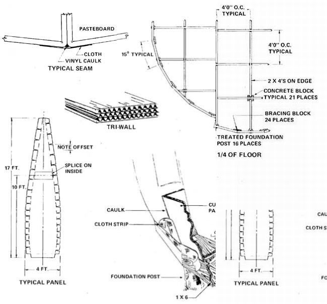
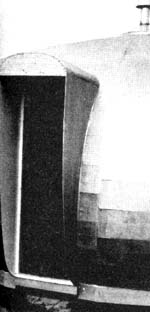
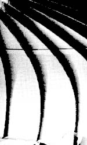
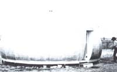
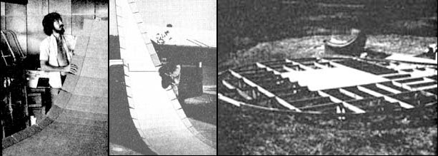
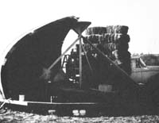
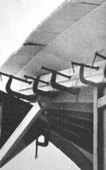
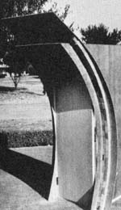

I'll admit, when you first hear about it, that the idea of building a full-sized house of paper -and then living in it-sounds absurd. But it really can be done. And such a structure can be cozy, strong, weatherproof, and permanent.
The Japanese have been making vertical wall panels and room divider screens from paper for centuries ... but I wanted to go that one better. What I wanted to try to do was construct a complete house of paper. A house that anyone could build ... at extremely low cost ... using very few tools (and no special tools at all) ... without any forms or scaffolding. A house that would last at least 10 years.
Corrugated paper board stock-or "pasteboard", as it's commonly known-was my first choice for the structure I wanted to build. It's easy to handle, very light in weight, available in a variety of colors and textures, and cuts, bends, and folds nicely. It can also be glued, taped, stapled, and fastened together in many other ways. And besides that, its price is quite reasonable ... even when you have to buy it.
Of course, a dedicated scrounger probably would never allow himself or herself to lay out cold, hard cash for pasteboard. The material usually overflows industrial and manufacturing sites, and city dumps always seem well stocked with it.
Indeed, I originally intended to scrounge the corrugated board stock for the house you see here. But it was already September and winter was coming on fast when I finally freed myself enough to start on the structure. So, in the interest of expediency, I purchased everything that went into the building. Still, the total materials package-including foundation and insulated floor but not including plumbing and interior cabinetry-came to only $1.25 a square foot. Imagine how little you might spend on a house like this if you have a talent for recycling other people's castoffs!
There is a bewildering variety of pasteboard stocks available. The ultimate strength (bursting strength) of each depends on the number of layers of corrugations or "flutes" in the board, the type of glue used to hold it together, and the thickness of the layers of paper from which it is made. Try to get pasteboard made with waterproof or water resistant glue and stay away from cardboard that has been coated with wax (since the wax will repel any glue or waterproofing you might try to add later).
The pasteboard I chose is called "Tri-wall" and it's made with three layers of flutes and fairly heavy outer paper surfaces. It's slightly over one-half inch thick and has a bursting strength of 1,100 pounds. I'm sure the board is a bit overengineered for the structure I built and the house could easily have been constructed of double-wall material.
If you use the more ordinary cardboard which has only a single layer of flutes, try to scrounge up pieces that are flat and which have no bends or folds in them. Then-making sure several inches separate any joints in one layer from joints in the others-use white (Elmer's or comparable) glue to cement the boards together into your own triple-thickness pasteboard. All exposed joints should then be sealed with nylon-reinforced paper tape and the laminated boards placed under something flat-such as a sheet of plywood-wiih weights on top until the bonding glue dries. (It really doesn't matter which direction the flutes of your laminated panels run, but the boards will be a little easier to work with if all the corrugations are lined up in the same direction.)
If you expect to use pasteboard to its maximum advantage as a building material, you must both use your boards properly and incorporate them into a structure that is inherently strong.
It quickly becomes obvious to anyone who experiments with them that the shape of a conventional "box" house is very weak ... so ranch styles and bungalows made of paper are definitely out. A spheroid shape, however, is both inherently strong (loads applied to any point on a spheroid tend to be distributed and shared by the whole surface) and efficient (a sphere beats all other geometric shapes for enclosing the most space with the least surface area). In other words, if we consider only the materials being used, a sphere-or part of one-is the ideal shape for a house constructed of paper.
In human terms, however, a sphere isn't nearly so ideal. Even if you slice one right through the middle horizontally (and place a floor there so it will have the maximum possible area), there's still a lot of wasted space towards the top of the dome you have left. And, since the walls of that dome curve in at the top all the way around, it can be difficult for the people inside to walk on or otherwise use the outside two or three feet of the dome floor's "rim" without bumping their heads.
So I took an ordinary hemisphere and modified it by"pushing down" the top and "bulging out" the sides to make the living space inside reasonably efficient for people. The shape which resulted is basically known as a catenary and is very pleasing. It also distributes any stress on the building's skin quite nicely without allowing the force to become concentrated at any one point.
I chose "pie shaped" panels for the construction of my hemisphere, instead of the triangles normally used in most of today's domes, because that was simply the easiest way out. It would have been extremely difficult and time consuming to calculate and then keep track of the exact shapes and lengths of all the differently sized triangles that I would have needed for the "squashed" building. I would also have wasted a lot of time andmaterials fabricating and joining the more than 100 odd-shaped triangles that the structure would have required. By using just one template to make 24 identical panels, however, I neatly sidestepped all those problems. True, the dome sections I wound up with are just big enough to put them beyond comfortable one-man size (especially outdoors in any kind of wind). But they are not at all heavy and handling them-once you learn to do it without bending the panels-is no real problem.
Who says a guy can't build and live in a house made out of paper? Larry Self constructed this attractive, strong, weatherproof "flattened dome " out of triple-thick corrugated cardboard, using a minimum of tools, at a cost of only $1.2.5 per square foot.
As constructed, my house is 25 feet across (at approximately waist height) and nine and half feet tall in the center. The building works well and gives you no sense of confinement when you're inside. It's also quite an efficient structure, since its floor is just 24 feet in diameter ... a size that can be constructed from 4 X 8 sheets of plywood with very little waste. (The scrap from this whole project, in fact, filled only three 20-gallon trash cans ... and was all "recycled" in my fireplace.)
You may wish to construct a house smaller or larger than this to suit your particular needs. If so, you can adjust the thickness of the pasteboard in the building's walls accordingly. I'm confident that Tri-wall can be made to span greater distances and that pasteboard can be used to good advantage on other shapes. Just avoid large, flat areas in your design.
HERE'S HOW WE BUILT IT
All floor, shell, and door sections for the dome were prefabricated in a shop and moved to the construction site by truck. The prefabbing took about a month of part-time work and actual construction approximately 10 days. Half of all this time went into work with the pasteboard panels.,
The only tools we used were scissors, knives (of the Stanley or Red Devil type with extra blades), saw, hammer, two-and four-inch paint brushes, large "C" clamps, shovel, posthole digger, and level.
Each of the 24 main pasteboard wall panels was 38 inches wide (plus flanges) at the widest point, and 17 feet long. We used a total of 37 sheets of 4 X 12 Tri-wall in their construction and every panel was made in two sections and spliced together (the overlapping splices added to their strength). All flanges are six inches wide, except at one place along the lower part of each panel where they were held to a width of five inches. By alternating where the V-shaped notches occurred in the flanges, it was possible to overlap them to form a solid stiffener rib along the line where any two of the pasteboard panels are joined together.
The "pie shaped" or "orange peel" panels were outlined from a pasteboard template and then cut out by hand. We found we got much cleaner cuts and that the work went a great deal faster when we kept razor-sharp blades in our knives at all times. We also developed a preference for lightly scoring each marked line first and then going over it several times-making a little deeper cut with each pass-until our blades were all the way through the Tri-wall. If you try it, cut against a sheet of plywood or similar material for best results.
We used a small metal eyebolt screwed into the end of a piece of wood (try an old broom handle) as a scoring tool when we bent up the flanges on the pasteboard panels. Try it. After a little practice, you'll find that you're able to draw the rounded end of the bolt precisely along the line you want to fold in one smooth, continuous motion ... and get the depth of the score just right while you're at it. (Use too little pressure and the fold later will be hard to make and may wander from where you want it. Bear down too hard and you run the risk of punching through the cardboard. Five minutes of practice on some scraps, though, should put you right in the groove you're after.) Once the pasteboard is scored, it's a simple matter to bend it against the straight edge of a piece of wood.
Although white glue is just the ticket for laminating together "homemade" panels of Tri-wall, the only adhesive we used in the final construction of our dome was contact cement. This is the "stick-um" that cabinet shops use for holding counter tops in place and it grabs "like crazy" when two surfaces that have been properly coated with the stuff are allowed to touch each other. Follow the directions on the cans, make sure you've got plenty of ventilation, and don't smoke when you use the cement.
We thinned our first coats of the adhesive so they'd penetrate the pasteboard better, and then we applied a fullstrength second coat of the cement to every surface we planned to glue. (Allow plenty of drying time between coats. In fact, if you like, you can apply the first coating to the panels as you make them and the second only a couple of hours before your dome's final assembly.)
I used just over six gallons of contact cement in the construction of my house . . . but I did spread it on rather liberally. You should be able to get by with less. However much you do use, though, make absolutely certain you have everything lined up just the way you want it before you press two cement-coated surfaces together. Once they're stuck, they're stuck!
My paper house was constructed on fairly flat ground (with a slope of about seven inches in 24 feet). The only foundation we used was concrete blocks turned on end and placed at each major intersection of the building's floor beams and treated posts set around the dome's circumference. This was done not so much to "hold the structure up" (the whole pasteboard shell weighs less than 600 pounds and the floor tips the scales at about 1,500) as to give the extremely lightweight house some "roots" to hang onto in high winds.
Strangely enough, the load problems we had to solve for this domed dwelling dealt with lifting, rather than settling. Due to the building's aerodynamic shape, its downwind side tries to pick the structure up in a high wind! So fasten those pasteboard panels down and fasten them well if you build one of these houses. I nailed the bottoms of my dome's sections to the building's floor temporarily until we had the shell completed. Then we made minor corrections by pushing the panels' bases in and out (to make the building's floor perfectly round and centered on its platform), and then-with reinforcing batten strips installed over the panels' bottom flanges-really spiked the sections down permanently.
The floor under my paper dome consists of a 2 X 4 beamwork grid, filled with fiberglass insulation, and covered on the bottom with 3/16" and on the top with one-half inch plywood. All the pieces of lumber used in the grid are less than eight feet long and it should be easy to scrounge someif not all-of the 2 X 4's. The placement of the beams is a little complicated (and you may wish to use a simpler, more conventional layout for your joists) but it is extemely effi cient with materials and does make a very strong floor.
Fortunately, on the prototype, all our precut floor joists fit beautifully and none had to be recut or spliced. Soon after construction of the floor had begun, however, the winds became so strong that we had to install some of the light fiberglass insulation in the platform by moonlight (after the winds had died for the night). I've heard of moonlighting on a job ... but this was ridiculous.
The winds blew even stronger on the day we started putting our 17-foot panels up and I thought we'd lose some of them for sure. It was a pleasant surprise, then, when the first three pasteboard sections of the dome withstood winds of 35 miles per hour with gusts up to I don't know how much. I was impressed by the panels' strength.
I was also impressed when we tried to join the flanges of the first two panels. I had assumed we could just force them against each other with our hands ... but we had to use short pieces of wood on each side (to protect the pasteboard from being crushed) and "C" clamps. This whole clamping assembly had to be moved from the floor all the way to the top of the dome as each set of matching flanges were successively brought into contact with each other. It was hard work, but it made a very strong rib down along the edges of each panel.
The building's 24 ribs (which, of course, are all turned to the inside of the dome) terminate at the center of the "roof" in a 32-inches-in-diameter pasteboard ring. A temporary pylon was set up in the middle of the house and the ends of the panels were secured to it until we had enough of them up to make the dome's skin self-supporting and rigid enough to resist the wind.
A template-cut to the proper curvature for the finished wall of the dome-was fabricated from scrap plywood and moved from rib to rib as the panels' flanges were glued together. This helped us make sure that the house's skin had exactly the same shape all the way around and, once the building was up, we got more use out of the template by nailing it into position as an interior wall.
The outside of each pasteboard joint was covered with a four-inch-wide strip of cloth which was pulled as tightly as possible to remove all wrinkles and sags and then glued on. -The material helps carry stress loads across the joints and gives the dome a smoother appearance. I used a combination polyester/cotton fabric which both-thanks to the polyester has a great deal of strength and-thanks to the cotton-accepts glue nicely. (Nylon and other synthetics would have been stronger, but they wouldn't accept the cement we used.) The strips of cloth were also used as reinforcement around the bottom of the dome, around the framing for the door, and around the hole in the center of the building's roof.
The top of the dome was finished off with a sheet metal cap. The low-profile cone-which is centered on that 32-inches-in-diameter pasteboard ring I mentioned earlier-has a six-inch stovepipe running up through its center. This keeps the hot pipe isolated from the pasteboard of the building's skin and protects the structure from fire.
We installed the dome's door last and that probably gave us more trouble than anything else we did. (It's a whole lot handier putting that final panel in place and gluing it to its neighbors if you already have a door somewhere else in the wall so you can run in and out.)
It's quite important that the door of any dome be very strongly framed so that it will successfully carry stress loads AROUND the hole in the skin. This has been the ruination of some of the structures, since-compared to the smooth, flow ing, unbroken surface of the rest of the building-the opening for the door is a definite weak spot around which stresses tend to accumulate.
A rounded overhang over the door and protective panels down its sides, while not entirely necessary, are nice extra touches (they help keep the wind out and protect you from water runoff as you enter and leave the house).
We kept our door opening small, for a couple of reasons: [1] I wanted to limit heat loss and gain inside the structure to an absolute minimum, and [2] I also wanted the door assembly to fit within a single panel and not reach over into a second. As a result, the opening of the building's door is 24 inches wide and 72 inches high.
"Porthole" windows (which were added after the accompanying photographs were taken) are also small-twelve inches in diameter-to reduce heat loss and gain. As little as they are, however, we find them quite adequate and they let in all the interior light we could want.
The whole house was protected from the weather with vinyl caulking which was applied to each joint (before the cotton/polyester strips went on) as the panels were glued together. The entire shell was then given two coats of varnish (the first was cut 50% with thinner), followed by three coats of mobile home roofing compound.
The roofing compound has an asphaltic base to which asbestos, glass fibers, and aluminum powder have been added. It goes on easily (almost like thick paint) and I reached the top of the dome by setting a ladder up in the center of the building and leaning out the hole in the middle with a brush on the end of a stick.
Just as the last of the compound was being put on ... it started to rain. Perfect timing! We sat inside the dome and felt very cozy as we listened to the drops hit its skin. The only real noise we could hear was the wind blowing around the top of the chimney.
Once the house was up, neighbors came from miles around to see that "thing" which looked like it had just landed. "Sorry," we had to tell them, "there's no little green men here ... just Larry Wheat (the fellow with the whiskers in some of the photos) and Lawrence Self."
The walls of the building have now been insulated and an interior pasteboard shell is being added to finish off the inside and make the structure even stronger. I also plan a special heating and cooling system for the building ... using the constant temperature of underground well water, a solar water heater, and wind-powered electrical generator.
There have been pasteboard storage cabinets, files, and even furniture on the market for quite some time ... and believe that this project now demonstrates that the material can be used for the construction of complete houses. Houses that are environmentally sound ... at least to the extent that they're fabricated of an absolute minimum of the earth resources. Houses that can be constructed of recycled castoff materials and which, themselves, are recyclable in turn.
And perhaps even more important to many of us, I think I've now proven that-with a knife, some glue, and a stack 4 scrounged-up pasteboard boxes-you too can have a low-cost mortgage-free house of your own!
EDITOR'S NOTE: If you would like detailed construction drawings of Larry Self's paper house, send $15 to Larry Self, 1318 Cloverdale, Richardson, Texas, 75080. Get 'et They're good!
|
 These photos show various details of the cardboard dome's construction. Each of the 24 main pasteboard wall panels was made in two sections and spliced together. The dwelling's floor- which measures 24 feet across-consists of a 2 X 4 beamwork grid sitting atop concrete blocks and treated posts. During construction, the clamped and glued ""ribs "" were fastened to a central pylon which was removed after most of the panels were up and standing. Last item to be built: the small, strongly framed door. |
 |
 |
|
 |
 |
 |
|
 |
 |
|